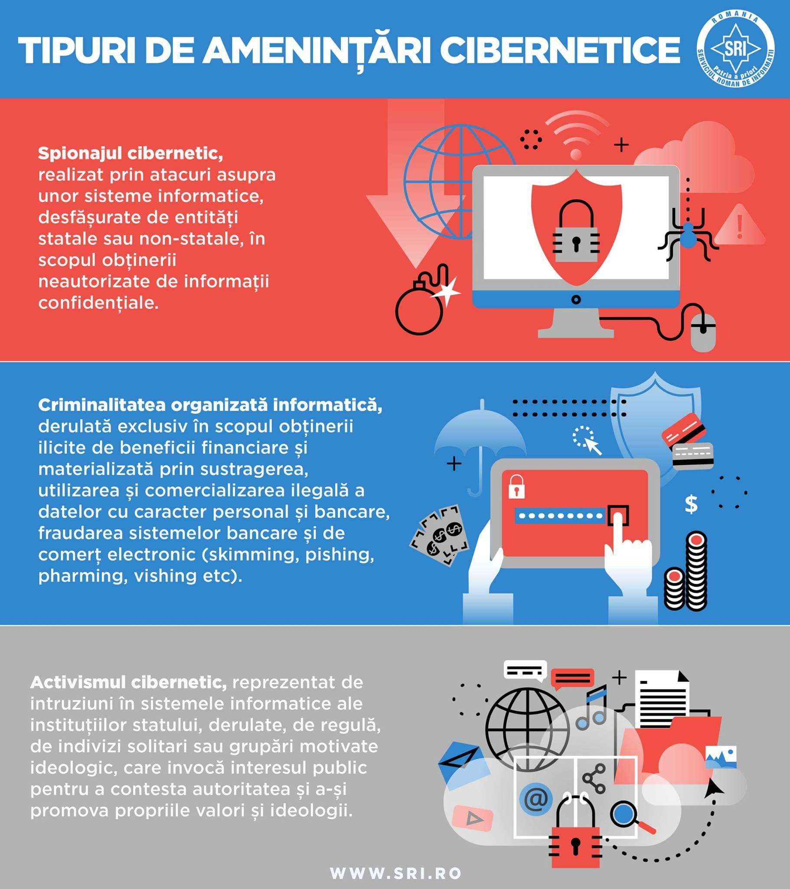
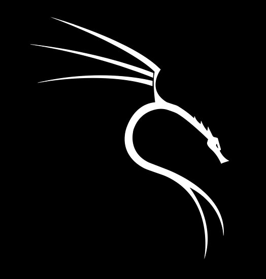
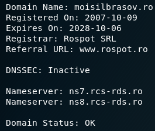
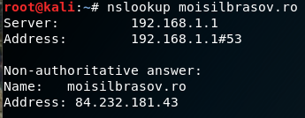

Reasons why Cybersecurity is important now more than ever
Cyberattacks affect all people
The fast changes in technology will cause a boom in cyberattacks
Damage to businesses and loss of jobs
Cybersecurity threats are also faced by individuals
Cyber concerns may result in increased regulations and legislation
A representation of the Internet

DESPRE ATACURILE CIBERNETICE
In general, când vine vorba de hacking, există un plan foarte bine gandit în spate. Nu vrem să recurgem direct la a ataca un server dacă nu avem destule informații despre acesta, deoarece ne vom expune riscului de a fi prinși.
Trebuie să luam în calcul câțiva pași esențiali pentru această operațiune. Procesul poate dura zile, săptămâni, chiar luni (în funcție de țintă și de riscul existent)
și poate fi rezumat în cinci pași:
Strângerea de informații („Reconnaissance”)
Scanarea
Obținerea accesului
Menținerea accesului
Acoperirea urmelor

Unul dintre cele mai cunoscute sisteme de operare folosite de hackeri și pestesteri este
Kali Linux. Este o distribuție de Linux bogată în aplicații bazate pe securitate
și testarea vulnerabilităților pentru o multitudine de sisteme informatice. Când vine vorba de
de scanări, DDoS, atacuri Web s.a.m.d., Kali Linux este alegerea perfectă și este în
același timp potrivit pentru oricine vrea să învețe în mod practic securitate cibernetică.
Numele de „Kali” face referire la zeul războiului din mitologia hindusă. În imaginea din stanga
este logo-ul acestui sistem de operare.
1) Strângerea de informații („Reconnaissance”)
Înainte de a lansa un atac, hackerii identifică în primul rând o țintă vulnerabilă
și caută cele mai bune moduri de a o exploata. Care este structura organizației? Care sunt cei mai
influențabili angajați? Ar trebui să țintim website-ul companiei sau poate o terță? Acestea sunt doar cateva
dintre întrebările pe care și le pune un atacator înainte de a trece la fapte. Ținta inițială poate fi oricine
dinăuntru sau conectat la organizație, de la directori executivi pănă la admini sau furnizori. Hackerii pur si
simplu au nevoie de un singur punct de intrare pentru a începe.
Există diferite metode prin care se pot afla mai multe informații despre un site/server. Una dintre cele
mai simple este simpla căutare pe Google/DuckDuckGo a tot ce vrem despre o anumită țintă. Într-un terminal
(de exemplu CMD în Windows, sau cel din Kali Linux), cu o simplă comandă precum ”nslookup” (sau ”dig”),
poți afla adresa IP a unui site, și folosind comanda ”whois” se pot găsi mai multe despre acel domeniu.


2) Scanarea
Odată ce ținta este identificată, următorul pas este găsirea exactă a unui punct slab ce
permite atacatorului să obțină accesul în sistem. Acest lucru este de obicei efectuat prin scanarea
amănunțită a rețelei unei organizații / a unei rețele private cu diferite unelte pentru a găsi puncte
de pătrundere. Acest pas al procesului de obicei are loc lent și uneori poate dura luni având în vedere
că se caută vulnerabilități. ”Nmap” reprezintă una dintre uneltele din Kali Linux care oferă informații
mult mai clare despre tipul de rețea, echipamentul folosit, sistemul de operare și așa mai departe.
3) Obținerea accesului
Având temele făcute (cercetarea, scanarea rețelelor/serverelor), hacker-ul poate începe atacul.
Totul trebuie să fie foarte bine plănuit și fiecare acțiune trebuie să aibă loc pe ascuns
(fără să declanșeze alarme și - dacă este posibil - fără să se genereze prea multe log-uri).
4) Menținerea accesului
Odată intrat în rețea, hacker-ul are opțiunea de a-și pastra accesul.
În multe situații, când diferite servere ale unor companii mari (Yahoo, Google, Microsoft etc.)
au fost sparte, atacatorii au lăsat ”portițe deschise” pentru a putea revine în sistem. Pentru a
realiza acest lucru, hackerii pot instala în secret programe malițioase precum ”root kits”
care le permit să se reconecteze cât de des vor. Și cu privilegiile de administrator dobândite
mai devreme, intrarea atacatorului nu mai depinde de un singur punct de acces. Aceste portițe
sunt numite ”backdoors”, și pot fi de asemenea lăsate în urmă de dezvoltatorii de software
ai aplicațiilor pe care le folosim zi de zi.
Așadar, un hacker poate extrage date în mod constant, poate urmări ce se întâmplă
în organizație, și apoi poate face orice dorește cu informațiile furate (de obicei acestea
sunt vândute pe piața neagră de pe Dark Web pentru sume considerabile de crypto-monede).
5) Acoperirea urmelor
Acest pas este de importanță majoră, dar mulți hackeri îl omit (în special cei începători).
Ei nu iau în considerare acest proces de ascundere și sfârșesc prinși (în Romănia de DIICOT, SRI sau STS)
și judecați pentru infracțiunile comnise. Accesul neautorizat într-un sistem poate rezulta
în consecințe serioase (confiscarea echipamentelor informatice, supraveghere impusă, arest etc).
”Obfuscation” (”confuzia”) este una dintre tehnici folosite pentru a efectua ascunderea.
Scopul acestei metode este de a dezorienta, încurca și distrage de la scopul principal
tot procesul de investigație criminalistică. Aceasta poate include: log cleaners, spoofing, dezinformare,
backbone hopping, conturi zombie, trojan commands și multe altele. De asemenea, când desfășori procesul
de hacking, este crucial să îți schimbi locația fizică, dar și online folosind servicii VPN (Virtual Private Network)
și nu numai.
Fiecare sistem informatic are diferite metode de a se auto-monitoriza pentru a efectua debugging sau
pentru a ajuta la depanare în cazul aparițiilor unor probleme (de exemplu ”log-urile”). O metodă de bază
pentru a ne acoperi urmele este ștergerea fișierelor ”Log” (din diferite aplicații, ale userilor sau
din diferite sisteme de monitorizare). Pentru Windows există script-uri(care pot fi găsite pe Internet) ce
pot șterge toate aceste file-uri. Pentru Linux, comenzile care pot fi folosite sunt: # rm ./bash_history - pentru a șterge comenzile date de userul curent # vim /var/log/messages - locația în care log-urile pot fi șterse (sau oricare alt file din /var/log,
în funcție de aplicația care a fost folosită pentru exploit).
În cele din urmă, tehnologia este distructivă numai în mâinile celor care nu realizează că fac parte din unul și același proces cu universul.